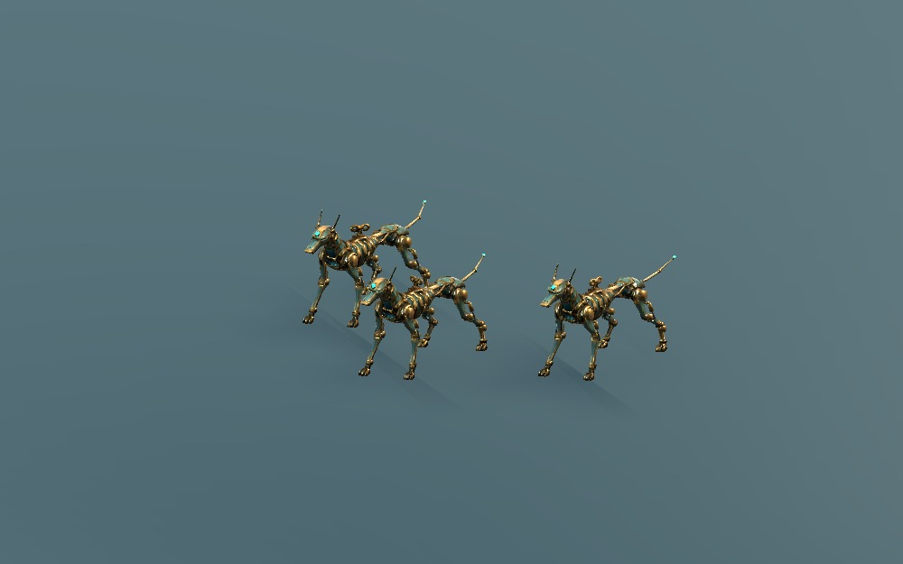

AUTOMATION / PREPARED ART / 2026.11.05
기계 수렵견, 움직임을 붙이다
선택한 Tripo 원본을 관절 단위로 정리하고, 게임용 경량화·리깅·기본 동작을 준비했다. 턱·다리·피스톤은 금속 부품으로 움직인다.
6,795 tris76,862 → 경량화
33 부품1 메시 / 2 재질
37 본정점당 1 본, 100%
6 동작24fps + 접지·타격 보조 키
실제 Godot 렌더 · 영상에는 소리가 없음
형태와 관절
몸길이 약 0.955m, 어깨 약 0.497m, 안테나를 제외한 머리 높이 약 0.628m. 다리 마디의 빈 안쪽을 막고, 회전축과 피스톤 연결 핀을 보강했다. 원본 파일은 보존했다.
실제 표시 크기
1280 × 800 / 기존 1.75배 카메라. 왼쪽부터 마녀 · 수렵견 · 태엽인형 · 포탑 · 적 3종. 조명은 동일한 검토용 조명이다.
사냥 무리 크기

0.8배 세 마리. 같은 기본 메시·재질을 재사용한다.
검사와 다음 연결
| 항목 | 현재 결과 |
|---|
| 저장본 / GLB 재임포트 | 메시 QA 오류 0 / 0, 6개 액션 유지 |
| Godot 재생 | 36,509 검사 통과 · 312 GPU 캡처 |
| 바닥·강체 | 촘촘한 샘플에서 바닥 위 유지, 스케일·시어 없음, 루프 양 끝 자세 일치 |
| 교환 파일 | packed Blender · GLB · 부품/소켓 계약 · 전용 임포트 스크립트 |
몸통 원본 쉘의 열린 경계, 숨겨진 접합면과 관절 내부 겹침은 남아 있다. 전 자세의 부품 충돌이나 실시간 물리 검증은 아니다. 붕괴는 대기 자세에서 시작하는 사전 제작 동작이다.
이번 범위는 수렵견 기본형과 동작 시안이다. 중장 추적기 추가 장갑, 스킬 규칙·표적·FX 연결, 신호기·거대 자동인형 모델은 후속 작업으로 남아 있다.